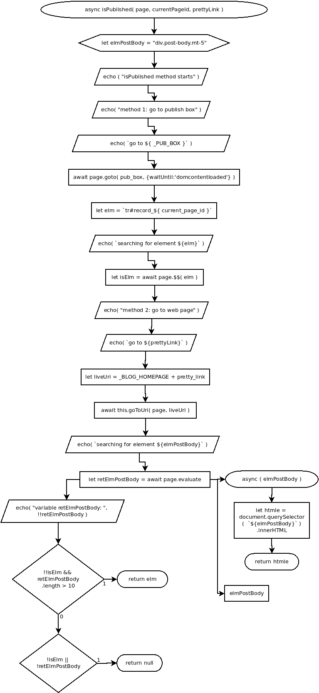

async isPublished( page, currentPageId, prettyLink )
Flowchart

Code
async isPublished( page, currentPageId, prettyLink ){
echo ( "isPublished method starts" ); //
let elmPostBody = "div.post-body.mt-5";
// method 1: go to publish box
echo( "method 1: go to publish box" ); //
echo( `go to ${ _PUB_BOX }` );
await page.goto( _PUB_BOX , {waitUntil:'domcontentloaded'} ); //
let elm = `tr#record_${ currentPageId }`; //
echo( `searching for element ${elm}` ); //
let isElm = await page.$$( elm ); //
// method 2: go to web page
echo( "method 2: go to web page" ); //
echo( `go to ${prettyLink}` ); //
let liveUri = _BLOG_HOMEPAGE + pretty_link;
await this.goToUri( page, liveUri );
echo( `searching for element ${elmPostBody}` ); //
let retElmPostBody = await page.evaluate( //
async ( elmPostBody ) => { //
let htmle = document.querySelector( `${elmPostBody}` ).innerHTML; //
return htmle; //
},
elmPostBody //
);
echo( "retElmPostBody: ", !!retElmPostBody ); //
if( !!isElm && retElmPostBody.length > 10 ){ //
return elm; //
} else if( !isElm || !retElmPostBody ){ //
return null; //
}
}